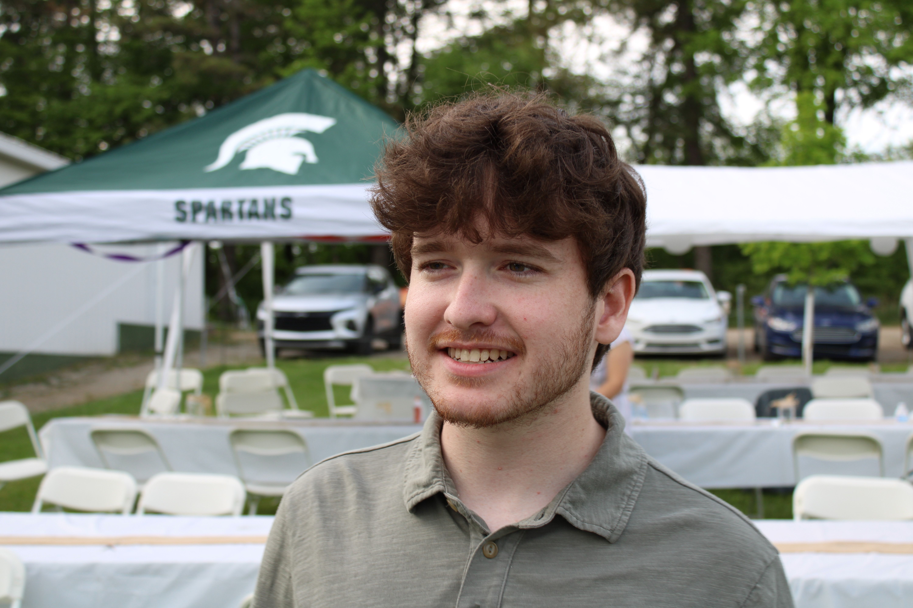
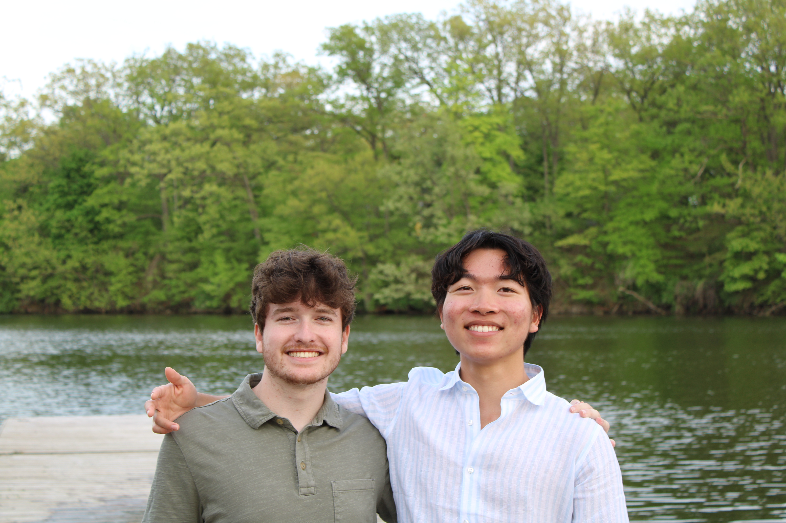

My name is Will Wisner, and I am currently a 20 year old student at Michigan State University majoring in Games & Interactive Media. Games have been a huge part of my life from childhood to adulthood. Some of my all time favorites include the Call of Duty Black Ops series, Doom, Overwatch, Batman Arkham games, and Elden Ring. I am very passionate about games and general design, and hope to go into a field where I can take advatange of that!
I am also apart of the MSU Crew Club, which is a rowing club that operates by itself, but is still under MSU. I have had rowing in my life since high school and will continue until I graduate college.
Two of my close family members, my brother and mom, also went and graduated from MSU. We are from the Saline, Michigan area so we have been back and forth from MSU our whole lives, going to football and basketball games. Loved the Spartans from childhood and now I get to be one!

